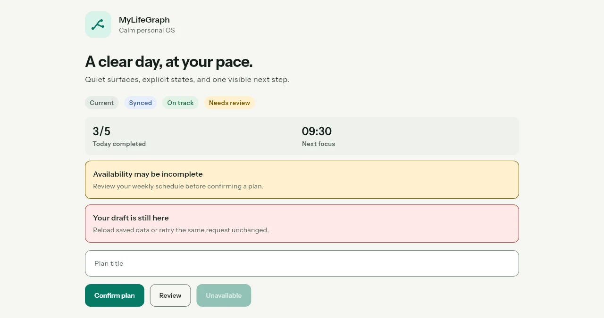
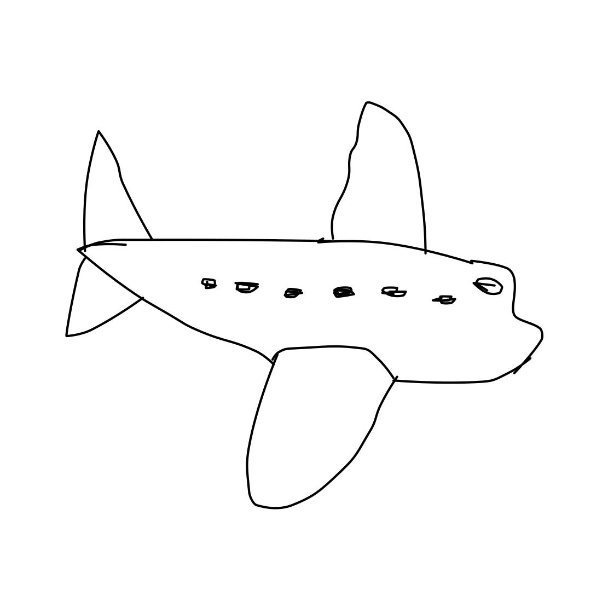

MYLIFEGRAPH / DESIGN SYSTEM

Flutter · Persönliche TagesplanungEin persönlicher Begleiter für Tagesplanung, Gewohnheiten und Fokus. Verbindet tägliche Check-ins mit einem klaren Blick auf den eigenen Alltag.
Hi, ich bin Matze.
Ich entwickle Apps, erkunde künstliche Intelligenz und baue Dinge, die meinen Alltag besser machen.
01 / AUSGEWÄHLTE ARBEITEN
Vom ersten kleinen Tool bis zur KI-App.
Ein Einblick in das, woran ich arbeite.

Flutter · Persönliche TagesplanungEin persönlicher Begleiter für Tagesplanung, Gewohnheiten und Fokus. Verbindet tägliche Check-ins mit einem klaren Blick auf den eigenen Alltag.
Persönliche Wochenpläne fürs Essen, passende Einkaufslisten und die nächsten Mahlzeiten auf einen Blick. Auch bekannt als V&M Fuel.
Eine eigene Oberfläche für agentische Entwicklung: Projekte, Chats und mehrere Coding-Agenten an einem Ort.
Sprechen statt tippen: native Spracheingabe für Windows und Android, mit separater Aufnahme und Transkription von Meetings.
Welche Befunde erkennen Vision-Language-Modelle ohne aufgabenspezifisches Training? Vergleich von BioMedCLIP und MedCLIP mit verschiedenen Prompt-Strategien auf Thorax-Röntgenbildern.
Teamprojekt zur 3D-Rekonstruktion aus mehreren kalibrierten Kamerabildern. Ein neuronales Modell erzeugt eine 3D-Szene mit Gaussian Splatting, aus der sich neue Ansichten rendern lassen.
Eine Suchmaschine für Webseiten rund um Tübingen: Crawling, Indexierung und Ranking als gemeinsames Uni-Projekt.
Entwicklung und Training von Reinforcement-Learning-Agenten, die in einer vorgegebenen Hockey-Umgebung gegen andere Agenten antreten. Abschluss war eine Competition zwischen den Teams.

Alles beginnt mit einer Skizze.Von der ersten Skizze zum KI-generierten Bild. Ein Zeichen-Canvas trifft auf Prompts, Bildstile und kreative Experimente.
Auf einer Insel gegen Piratenwellen bestehen, Beute sammeln und Ausrüstung verbessern. Das Ziel: ein Schiff bauen und entkommen.
RepCounter, Gem Calculator, Card Manager und Eieruhr über eine gemeinsame Oberfläche öffnen.
Wiederholungen zählen, Trainingszeit messen und beim Satz bleiben. Eines meiner ersten Web- und Android-Projekte.
02 / DER MENSCH DAHINTER
Matze / aka matooo
Mich interessiert, wie Dinge funktionieren. Und wie man sie ein bisschen besser machen kann.
Ich studiere Informatik in Tübingen. In meinen Projekten treffen Softwareentwicklung, künstliche Intelligenz und praktische Ideen aufeinander – vom Trainingstool bis zum persönlichen Alltagsbegleiter.
Abseits des Bildschirms gehören Calisthenics, Fitness und Ernährung zu meinem Alltag. Mein Hintergrund im Rettungsdienst bringt eine weitere Perspektive mit: Technik ist dann spannend, wenn sie Menschen hilft.
Ideen ausprobieren und durch eigene Projekte lernen.
Im Training genauso wie an der nächsten Herausforderung.
03 / MEIN WERKZEUGKASTEN
Technologien, mit denen ich in meinen
eigenen und gemeinsamen Projekten arbeite.
Von der Browser-Idee zur mobilen Anwendung.
Modelle verstehen, ausprobieren und in Projekte bringen.
Das Fundament hinter funktionierender Software.
Konzeption und Steuerung autonomer Entwicklungsabläufe und integrierter Apps mit Codex, Grok Build, Claude Code (App und CLI) und Antigravity (App und CLI). Schwerpunkte sind Kontextmanagement, strukturierte Agent-Anweisungen, MCP, Plugins und die Integration von KI-Funktionen über APIs.
04 / PROJEKTVERZEICHNIS
Apps, Experimente und erste Schritte.
Jedes Projekt ist ein Stück Lernkurve.
Mobile-first Coaching-App mit Flutter, FastAPI und Supabase. Der Gastmodus macht das Produkt ohne Konto erlebbar; Planung und Hinweise basieren auf expliziten Eingaben.
Im Browser zeichnen, einen Prompt ergänzen und mit dem Python-Backend Bilder erzeugen. Pinsel, Radierer, Undo/Redo und anpassbare Generierungsparameter gehören zum Projekt.
Ein Ernährungsprojekt rund um persönliche Präferenzen, Wochenplanung und Einkaufslisten. Die ursprüngliche V&M-Fuel-Projektwebsite bleibt im Archiv erreichbar.
Ein natives Entwicklungsprojekt mit Mikrofon-Overlay, Diktierverlauf und konfigurierbaren Sprachanbietern. Die Gerätevalidierung ist noch Teil der Entwicklung.
Entstanden im Kurs Modern Search Engines. Eine Pipeline verarbeitet Webseiten zu einem durchsuchbaren Index und stellt die Ergebnisse über eine Streamlit-Oberfläche bereit.
Wiederholungen zählen, Trainingszeit messen und beim Satz bleiben. Eines meiner ersten Web- und Android-Projekte.
Forschungsprojekt zur Zero-Shot-Multi-Label-Klassifikation mit BioMedCLIP und MedCLIP auf CheXpert, NIH ChestX-ray14 und PadChest. Wir verglichen positive und negative Prompts, LLM-generierte Beschreibungen und kombinierte Strategien. Die Auswertung zeigt: Der Nutzen einer Prompt-Strategie hängt stark von Modell und Datensatz ab.
Eine persönliche Web-App zum Steuern von Coding-Agenten, Verwalten von Projekten und Chats sowie zur Spracheingabe. Die visuelle Vorschau zeigt eine gestaltete Demo mit Beispieldaten.
Karten, Bilder und eigene Kategorien in einer kleinen Web-App verwalten. Die Daten werden lokal im Browser gespeichert.
Magische Items vergleichen: Welcher Kauf spart die meiste Zeit pro eingesetztem Gem?
Auf einer Insel gegen Piratenwellen bestehen, Beute sammeln und Ausrüstung verbessern. Das Ziel: ein Schiff bauen und entkommen.
Mein Beitrag im Team: ein Agent mit Soft Actor-Critic (SAC), Training gegen einen Pool verschiedener Gegner und Benchmarks zum Vergleich der Modelle. Der trainierte Agent trat in der abschließenden Competition gegen die Agenten anderer Teams an.
Im Projekt entwickelten wir eine Pipeline, die Bildmerkmale mehrerer Kameras zusammenführt und daraus eine maßstabsgetreue 3D-Darstellung von Objekten und ihrer Umgebung vorhersagt. Dazu gehörten Modelltraining, Rendering aus neuen Blickwinkeln und die Bewertung der Rekonstruktionsqualität.
Meine Projekte, Interessen und Entwicklung an einem Ort. Die ursprüngliche Website lebt vollständig im Archiv weiter.
Ein unkomplizierter Fünf-Minuten-Timer. Ein kleines Experiment aus der ersten Portfolio-Version.
RepCounter, Gem Calculator, Card Manager und Eieruhr über eine gemeinsame Oberfläche öffnen.
Ein kleines Beispiel für modulares Routing mit einer Start-, Info- und Einstellungsseite.
Ein früher Startseiten-Entwurf mit Lagerfeuer-Video aus meinem ursprünglichen Repository.
Für diese Suche wurde kein Projekt gefunden.
DIE ERSTE VERSION BLEIBT.
Meine ursprüngliche Website, alle kleinen Apps und die komplette alte Sammlung.
05 / LASS UNS REDEN
Von einer Idee zum nächsten Projekt.